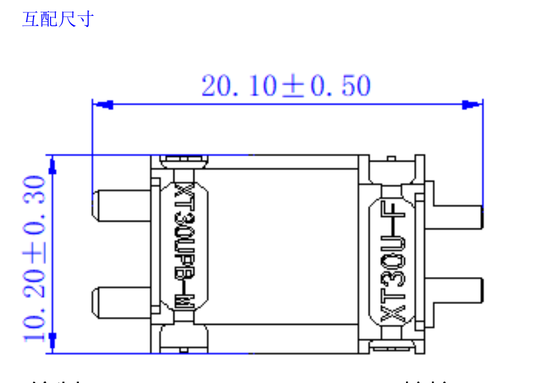
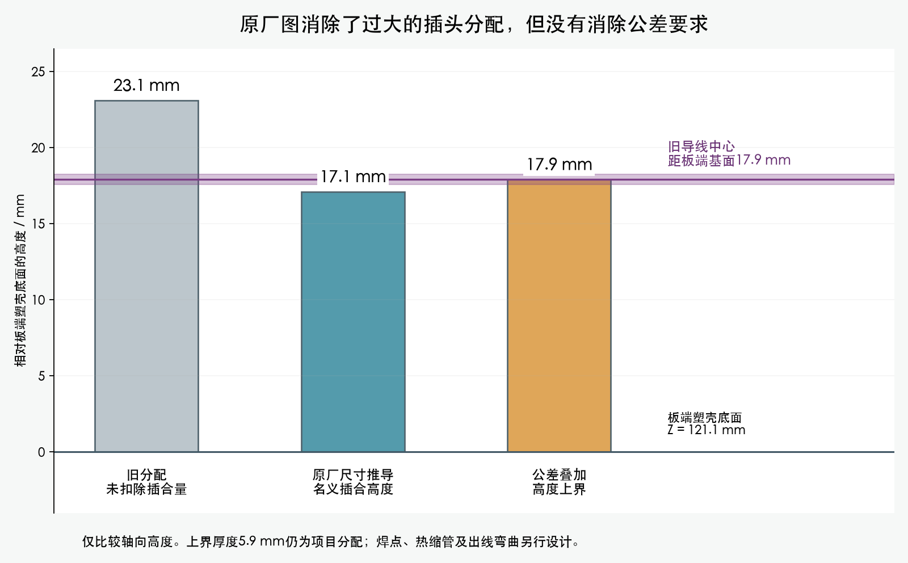

艾迈斯XT30UPB-M与XT30U-F，2025V1原厂图。互配总长20.10±0.50mm，扣除3.00±0.30mm板端焊脚，板上名义高度为17.10mm，独立公差上界17.90mm。

打开原厂完整PDF · 官方产品下载页 · 下载时间与来源记录

| 本次复核 | 结果 |
|---|---|
| 7个XT30用名义插合尺寸；其他22个插头保留 | 局部线形与4条端子穿入扫掠PASS |
| 计入高度公差、宽度公差和厚度分配 | 原径向段和端子扫掠仍有包络冲突 |
| 内收身体端过渡 | 已避开插头，完整四线方案仍受其他结构、既有线束和弯曲半径限制 |
整体线束仍为BLOCKED。需要继续完成路线、固定、出线及逐线长度；这些属于现在可做的设计工作。主模型未改，未发布加工图。
线端厚度公差未由厂家标明，5.9mm上界厚度属于研究分配；焊点和热缩管尚未纳入。不能把名义包络检查等同于实物装配通过。
尺寸与结果完整说明 · 名义结果 · 上界结果 · 身体端研究 · JST完整端子工艺资料